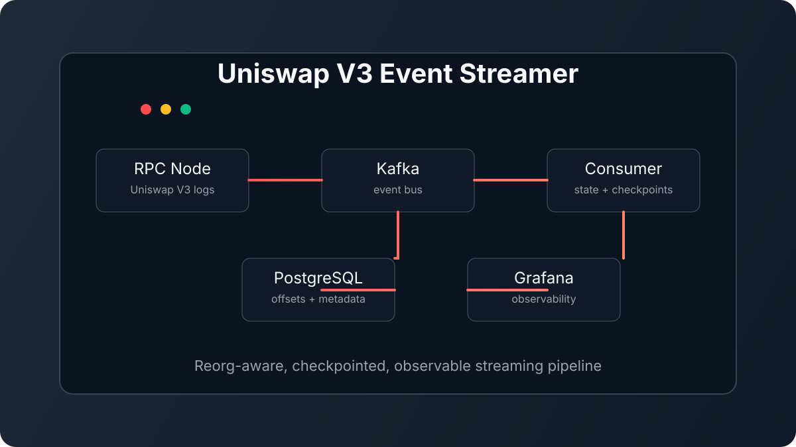

Case 01 · Web3 streaming
Uniswap V3 Event Streamer
A production-style event pipeline that turns raw Uniswap activity into a restart-safe, observable stream for downstream analytics.
The hard part
Handling checkpoints and chain reorganizations without corrupting downstream state.
The system
Decoupled Kafka producers and consumers with PostgreSQL, Prometheus, and Grafana.
Python, Kafka, PostgreSQL, Docker, Prometheus, Grafana
Read the repository ↗